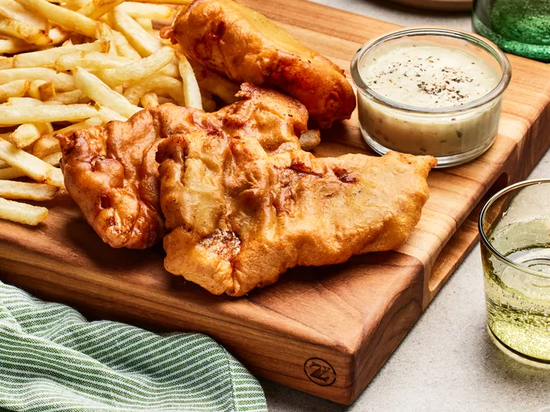

Fish and Chips Recipe

Ingredients:
- 4 large potatoes
- 1 cup of all-purpose flour
- 1 teaspoon of baking powder
- 1 teaspon of salt
- 1 teaspoon of ground black pepper
- 1 cup of milk
- 1 large egg
- 1 quart of vegetable oil
- 1 1/2 pounds of cod fillets
Steps:
- Gather all ingredients.
- Place sliced potatoes in a medium bowl and cover with cold water.
- Mix flour, baking powder, salt, and pepper together in a separate medium bowl.
- Add milk and egg; stir until batter is smooth. Let stand for 20 minutes.
- Meanwhile, heat oil in a large pot or electric skillet to 350 degrees F.
- Drain and pat dry potatoes. Fry in hot oil until tender, about 5 minutes; drain on paper towels.
- Dredge cod in batter, one piece at a time, and place in hot oil.
- Fry fish in batches until golden brown on all sides; drain on paper towels. Monitor oil temperature, increasing the heat as needed to maintain 350 degrees F.
- Fry potatoes again in hot oil until crisp, 1 to 2 minutes; drain on paper towels.
- Serve and enjoy!
Home